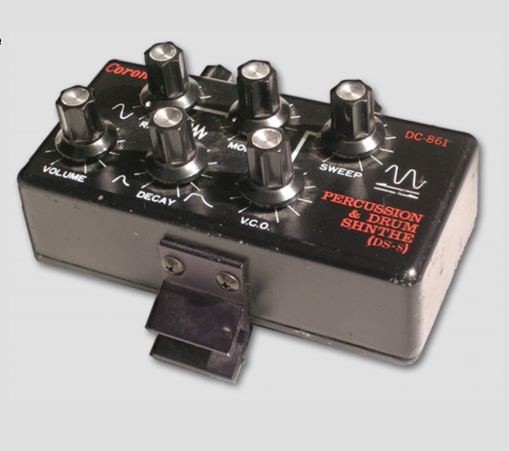

Percussion & Drum Synth

The DS7 Drum Synce (DC860) is a little analog percussion synthesizer from the 80’s made by CORON. This drumsynth was dedicaced to drummers : the DS7 was fixed on the border of a drum to be played/triggered by hitting the drum. The DS7 contain a VCO +VCA chain. The VCO is modulated by a cheesy LFO and a simple decay envelope trigged by the piezzo cell pulse. The cell work as a pressure/hit sensor. It can be replaced by a jack to be used with any kind of trig pulses or even gates. In this case the decay pot become a Release pot. There is lot’s of clones available e.g.: - https://github.com/EugeneCarlo/coron-ds8-super-huevo-edition/tree/main - https://github.com/melka/Coron-DS8-Eagle
All DB data
- Name: Coron DS7 (DS8)
- Author: Paparail Synth Labs
- Link: http://m.bareille.free.fr/ds7clone/ds8.htm
- Demo: https://www.youtube.com/watch?v=pb0dTHfIf-k
- Picture: ../pics/coron-ds7-ds8.jpg
- Description: Percussion & Drum Synth
- Notes: **The DS7 Drum Synce (DC860) is a little analog percussion synthesizer from the 80’s made by CORON. This drumsynth was dedicaced to drummers : the DS7 was fixed on the border of a drum to be played/triggered by hitting the drum. The DS7 contain a VCO +VCA chain. The VCO is modulated by a cheesy LFO and a simple decay envelope trigged by the piezzo cell pulse. The cell work as a pressure/hit sensor. It can be replaced by a jack to be used with any kind of trig pulses or even gates. In this case the decay pot become a Release pot. There is lot’s of clones available e.g.: - https://github.com/EugeneCarlo/coron-ds8-super-huevo-edition/tree/main - https://github.com/melka/Coron-DS8-Eagle **
- Artifacts: {“Schematic”=>true}{“PCB”=>false}{“BOM”=>true}{“FW”=>false}{“Docs”=>true}{“Enclosure”=>false}
- Tags: AnalogMonophonicDrum
- Level: Advanced
{kind=link}